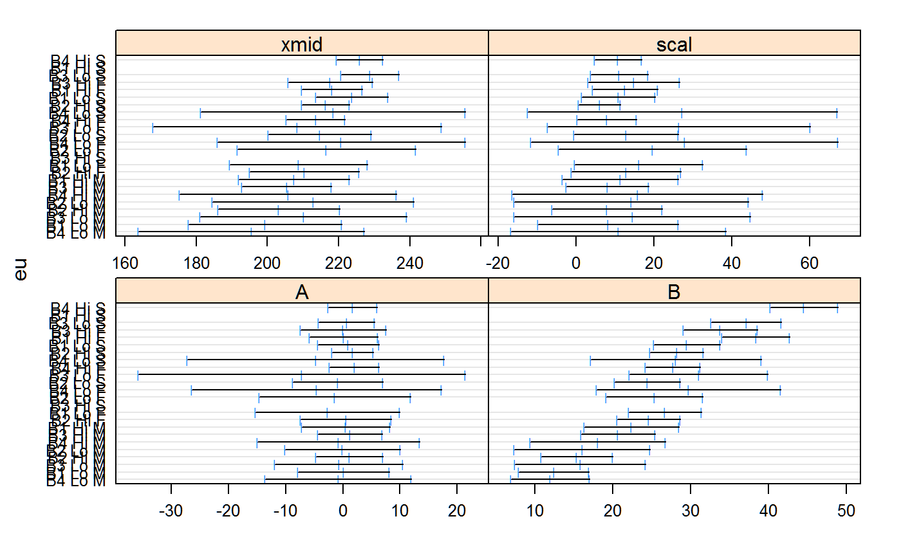
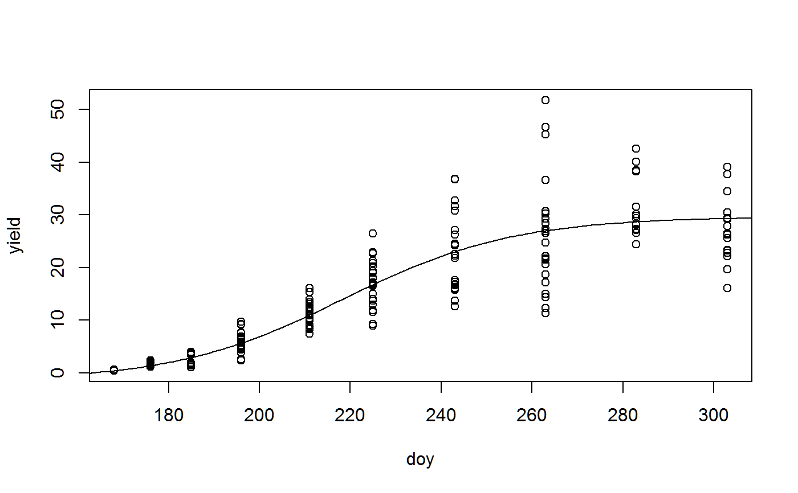
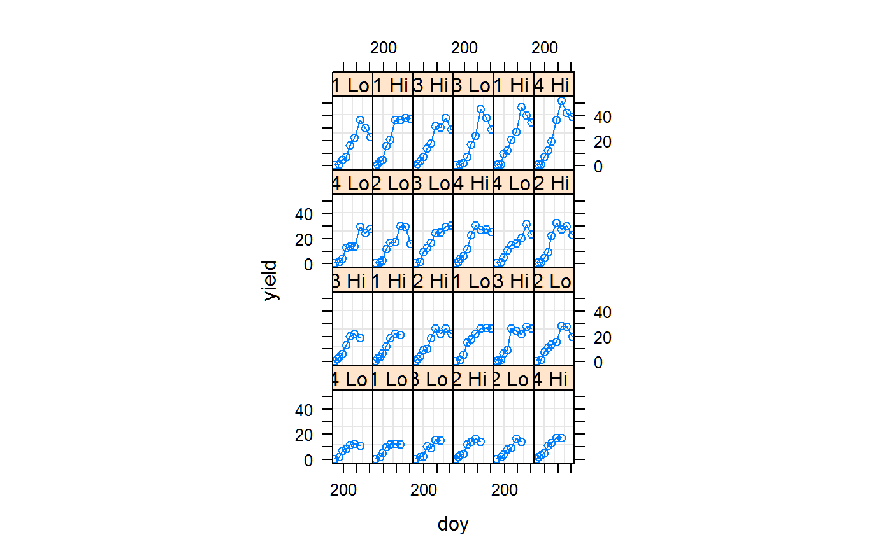

Biomass of 3 crops in Greece
miguez.biomass.RdBiomass of 3 crops in Greece
data("miguez.biomass")
Format
A data frame with 212 observations on the following 5 variables.
doyday of year
blockblock, 1-4
inputmanagement input, Lo/Hi
cropcrop type
yieldyield tons/ha
Details
Experiment was conducted in Greece in 2009. Yield values are destructive Measurements of above-ground biomass for fiber sorghum, maize, sweet sorghum.
Hi management refers to weekly irrigation and high nitrogen applications. Lo management refers to bi-weekly irrigation and low nitrogen.
The experiment had 4 blocks.
Crops were planted on DOY 141 with 0 yield.
Source
Fernando E. Miguez. R package nlraa https://r-forge.r-project.org/projects/nlraa/
References
Sotirios V. Archontoulis and Fernando E. Miguez (2013). Nonlinear Regression Models and Applications in Agricultural Research. Agron. Journal, 105:1-13. http://doi.org/10.2134/agronj2012.0506
Hamze Dokoohaki. http://www.rpubs.com/Para2x/100378 https://rstudio-pubs-static.s3.amazonaws.com/100440_26eb9108524c4cc99071b0db8e648e7d.html
Examples
library(agridat) data(miguez.biomass) dat <- miguez.biomass dat <- subset(dat, doy > 141) libs(lattice) xyplot(yield ~ doy | crop*input, data = dat, main="miguez.biomass", groups = crop, type=c('p','smooth'), auto.key=TRUE)# ---------------------------------------------------------------------------- # Archontoulis et al fit some nonlinear models. # Here is a simple example which does NOT account for crop/input dat2 <- transform(dat, eu = paste(block, input, crop)) dat2 <- groupedData(yield ~ doy | eu, data = dat2) fit.lis <- nlsList(yield ~ SSfpl(doy, A, B, xmid, scal), data = dat2)#> Warning: 2 errors caught in nls(y ~ cbind(1, 1/(1 + exp((xmid - x)/exp(lscal)))), data = xy, #> start = list(xmid = ir[1L], lscal = log(abs(ir[2L]))), algorithm = "plinear"). The error messages and their frequencies are #> #> number of iterations exceeded maximum of 50 #> 1 #> step factor 0.000488281 reduced below 'minFactor' of 0.000976562 #> 1libs(nlme) # use all data to get initial values inits <- getInitial(yield ~ SSfpl(doy, A, B, xmid, scal), data = dat2) inits#> A B xmid scal #> -1.533879 29.605749 218.475113 18.647521# must have groupedData object to use augPred dat2 <- groupedData(yield ~ doy|eu, data=dat2) plot(dat2)# without 'random', all effects are included in 'random' m1 <- nlme(yield ~ SSfpl(doy, A, B, xmid,scale), data= dat2, fixed= A + B + xmid + scale ~ 1, # random = B ~ 1|eu, # to make only B random random = A + B + xmid + scale ~ 1|eu, start=inits)#> Warning: Iteration 1, LME step: nlminb() did not converge (code = 1). Do increase 'msMaxIter'!#> Warning: Iteration 2, LME step: nlminb() did not converge (code = 1). Do increase 'msMaxIter'!#> Warning: Iteration 3, LME step: nlminb() did not converge (code = 1). Do increase 'msMaxIter'!fixef(m1)#> A B xmid scale #> 0.09825105 25.78793521 213.40157041 12.87242161summary(m1)#> Nonlinear mixed-effects model fit by maximum likelihood #> Model: yield ~ SSfpl(doy, A, B, xmid, scale) #> Data: dat2 #> AIC BIC logLik #> 1185.665 1236.013 -577.8323 #> #> Random effects: #> Formula: list(A ~ 1, B ~ 1, xmid ~ 1, scale ~ 1) #> Level: eu #> Structure: General positive-definite, Log-Cholesky parametrization #> StdDev Corr #> A 0.7683561 A B xmid #> B 8.1056194 0.454 #> xmid 6.0833535 0.269 0.980 #> scale 2.3036178 -0.926 -0.085 0.113 #> Residual 3.0442053 #> #> Fixed effects: A + B + xmid + scale ~ 1 #> Value Std.Error DF t-value p-value #> A 0.09825 0.6543924 185 0.15014 0.8808 #> B 25.78794 1.7318383 185 14.89050 0.0000 #> xmid 213.40157 1.7318568 185 123.22125 0.0000 #> scale 12.87242 1.2476055 185 10.31770 0.0000 #> Correlation: #> A B xmid #> B 0.026 #> xmid 0.402 0.743 #> scale -0.706 0.104 -0.050 #> #> Standardized Within-Group Residuals: #> Min Q1 Med Q3 Max #> -2.69357507 -0.37156874 -0.06058247 0.40247140 3.47313898 #> #> Number of Observations: 212 #> Number of Groups: 24plot(augPred(m1, level=0:1), main="miguez.biomass - observed/predicted data") # only works with groupedData object#> Error in eval(object$call$data): object 'dat2' not found